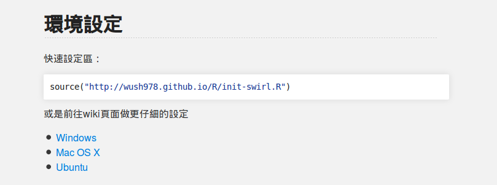

- 資料科學的Hello World
- R 的資料處理技術與今日課程介紹
- 關於swirl
R 與資料處理
Wush Wu
國立台灣大學
課程內容
資料科學的Hello World
Dashboard是團隊的第一步

檢驗資料的品質
- 乾淨
- 正確
檢驗對資料的想法
- 設計問題
- 設計KPI
一個資料源，一個Dashboard
- 價值會隨著資料源的多元而增加
Dashboard 能快速建立信任感
- 資料科學團隊是成本單位
- 資料科學團隊需要其他團隊的合作
R 社群活動：Cyber Security

R 的資料處理技術
R 是一套完整的資料科學解決方案
- 資料的收集
- 資料的處理
- 資料的視覺化
讀取資料
- RBasic-07-Loading-Data
- RDataEngineer-01-Parsing
- RDataEngineer-02-XML
- RDataEngineer-03-JSON
- RDataEngineer-04-Database
處理資料
- RDataEngineer-05-Data-Manipulation
- RDataEngineer-06-Join
關於swirl
- 使用自己電腦的同學，請依照課程網頁更新教材 -
關於swirl
- 這次新增了以下指令：
chat()可以打開聊天室issue()可以打開issues
RBasic-07-Loading-Data
R 預設的讀取資料技術
- 套件中的資料
- CSV(comma-separated values)
- 中文編碼
CSV(comma-separated values)
Year,Make,Model
1997,Ford,E350
2000,Mercury,Cougar
CSV(comma-separated values)
- 分隔符號：單一字符
- Hive的CSV：
- 欄位的分隔符號（Field）
- 集合的分隔符號（Collection）
- Map key的分隔符號
字符編碼（Encoding）
Hex和Binary
- Hex Code (16進位)
- 位元組(byte)是目前電腦處理記憶體的基本單位。一個位元組有8個位元(bit)。
- 00000001, 00110101
- 用兩個hex code來代表一個位元組
- 00000001 ==> 0000,0001 ==> 01
- 00110101 ==> 0011,0101 ==> 35
- 位元組(byte)是目前電腦處理記憶體的基本單位。一個位元組有8個位元(bit)。
範例：文字的"0"與數字的0L
- 整數0L的記憶體，寫成hex code是 00 00 00 00 (佔有四個位元組)
- 文字"0"的記憶體，寫成hex code是 30 (佔有一個位元組)
編碼(Encoding)
- 把位元組的組合轉換成文字的規則
- ASCII
- 30 => "0"、41 => "A"、0D => Enter(\r)、0A => 換行(\n)
中文編碼
- UTF-8
- E4 B8 AD => "中"
- E6 96 87 => "文"
- BIG5
- A4 A4 => "中"
- A4 E5 => "文"
編碼101
iconvEncodingSys.getlocale(),Sys.setlocale(locale = "cht")
RDataEngineer-01-Parsing
非結構化的資料
- 請問電腦如何知道以下資訊的意義？
- 64.242.88.10 - - [07/Mar/2004:16:05:49 -0800] "GET /twiki/bin/edit/Main/Double_bounce_sender?topicparent=Main.ConfigurationVariables HTTP/1.1" 401 12846
- 64.242.88.10 - - [07/Mar/2004:16:06:51 -0800] "GET /twiki/bin/rdiff/TWiki/NewUserTemplate?rev1=1.3&rev2=1.2 HTTP/1.1" 200 4523
什麼是Parsing?
- 根據Domain Knowledge，告訴電腦資料的規則
- 位置
- 分隔符號
- Regular Expression
RDataEngineer-02-XML
XML(eXtensible Markup Language)
- 讓電腦能理解資料意義的資料格式
- 標籤
- 屬性
- 內容
<?xml version="1.0"?>
<小紙條>
<收件人>大元</收件人>
<發件人>小張</發件人>
<主題>問候</主題>
<具體內容>早啊，飯吃了沒？ </具體內容>
</小紙條>
HTML
- 有規範的標籤
- HTML用於撰寫網頁、XML用於傳輸資料
XPath(XML Path Language)
<A>
<B>
<C/>
</B>
</A>
/A/B/C//B
RDataEngineer-03-JSON
JSON(JavaScript Object Notation)
{
"firstName": "John",
"lastName": "Smith",
"sex": "male",
"age": 25
}
JSON(JavaScript Object Notation)
- 字串：
"firstName","John" - 數字：
25 - 陣列：
[1, 2, "3"] - 物件：
{ "a" : 1, "b" : "string", "c" : { "c1" : 1 } }
RDataEngineer-04-Database
結構化資料
- 非結構化資料：純文字
- 半結構化資料：CSV、XML、JSON
- 結構化資料：關聯式資料庫（
data.frame）
R 的物件導向系統
library(RSQLite)
Error in library(RSQLite): there is no package called 'RSQLite'
methods("dbConnect")
Error in .S3methods(generic.function, class, parent.frame()): no function 'dbConnect' is visible
Transaction
- 保證一件工作：
- 未執行
- 已完成
- 範例：
- 複製到暫存檔案
- 重新命名
RDataEngineer-05-Data-Manipulation
R 的結構化資料來源
- 內部：
data.frame、data.table - 外部：關聯式資料庫
Grouped Operation
group_by- 分類
- 對
group_by的輸出做操作
- 同步操作
Grouped Operation
summarise(flights, mean(dep_delay, na.rm = TRUE))######## == summarise ==> result
group_by(flights, month) %>% summarise(flight, mean(dep_delay, na.rm = TRUE))- ######### == group_by ==> ### ### ###
- ### == summarise ==> result1
- ### == summarise ==> result2
- ### == summarise ==> result3
- ######### == group_by ==> ### ### ###
程式碼的壓縮
x1 <- filter(flights, ...)
x2 <- select(x1, ...)
x3 <- summarise(x2, ...)
程式碼的壓縮
- 把
x1用filter(flights, ...)取代
x2 <- select(filter(flights, ...), ...)
x3 <- summarise(x2, ...)
程式碼的壓縮
summarise(select(filter(flights, ...), ...), ...)
Pipeline Operator
把filter的結果放到select的第一個參數
x2 <-
filter(flights, ...) %>%
select(...)
x3 <- summarise(x2, ...)
Pipeline Operator
把filter的結果放到select的第一個參數
把select的結果放到summarise的第一個參數
x3 <-
filter(flights, ...) %>%
select(...) %>%
summarise(...)
RDataEngineer-06-Join
多資料源能激盪出更高的價值
- flights
- flights + weather
- flights + weather + airports
left_join

right_join

inner_join

full_join

anti_join

semi_join

結束之後...
你已經是一個初階的資料科學家

- 政府採購資料 v.s. 公司基本資料
- 各里開票結果 v.s. 各里收入中位數
- 登革熱病例變化 v.s. 電子發票